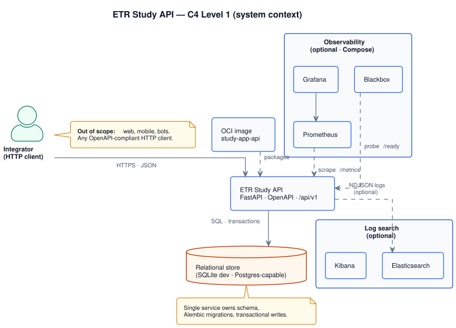
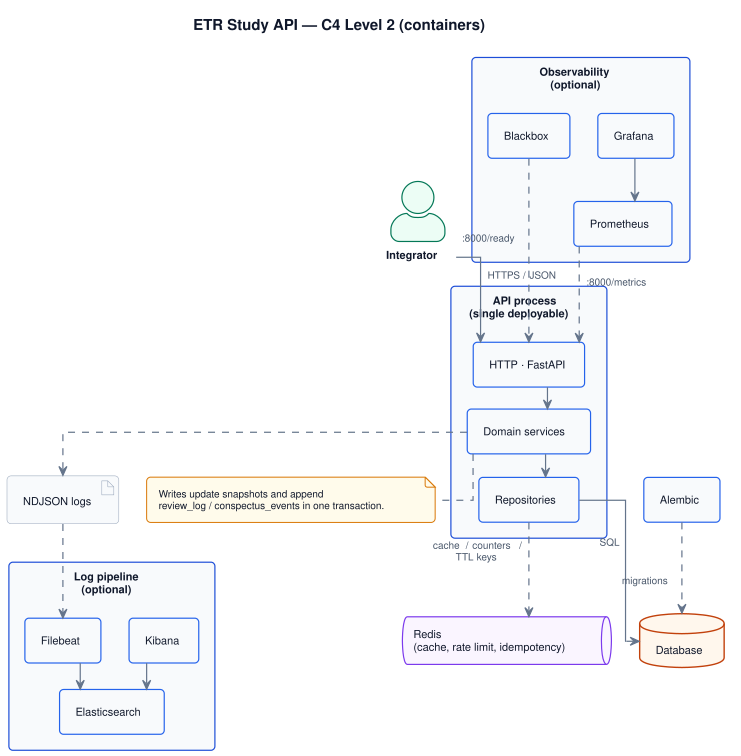

Internal · Architecture
ETR Study API System design
The system design of the ETR Study API: a single, versioned HTTP surface backed by a relational model that supports Extract–Transform–Retrieve study flows, spaced retrieval, and auditable history. Written for engineers who implement, integrate, or operate the service.
- Domain aggregates
- 7
- Functional reqs
- 7
- Non-functional reqs
- 8
- Decisions
- 7
- C4 + ER diagrams
- 3
- Sequence diagrams
- 3
Scope and boundaries
The design is scoped to the HTTP API and the relational data model that underpins it. At the boundary we assume a single abstract actor, the integrator: any standards-compliant HTTP client. The deployable unit is modelled as one application process with one primary relational database. Horizontal scaling, connection pooling, and read replicas are deployment concerns once load and SLOs justify them.
| Category | In scope | Out of scope |
|---|---|---|
| Product | Users, conspectuses, versioned schedule policies, due retrieval state, review logs, learning errors, schedule summaries | End-user UX; specific clients (browser, mobile, bots); offline sync; voice-memo / walk workflows unless explicitly added |
| Platform | One API process, database, observability hooks | Kubernetes topology, ingress, service mesh, node pools |
| Security | API key, rate limits, CORS, idempotent writes | Enterprise IdP (e.g. Okta, Azure AD, Google Workspace) |
ETR methodology mapping
Level: Bridge to engineering. Methodology describes how humans study; this document assigns each concept to storage, policy, or client behaviour. Rows below name the primary artefact; see Methodology traceability for enforcement level.
| Methodology | System artefact | Notes |
|---|---|---|
| Three-column cue sheet (Extract) | conspectuses.cue_sheet + cue_sheet_schema_version |
Schema in Cue sheet JSON; validation tier in Content validation. |
| Transform (dense paragraph, 5–7 bullets) | dense_paragraph, bullets |
Counts and sentence limits are defaults / advisory unless product turns them into hard API validation. |
| Retrieve — four slots A–D, tags easy / hard / forgot | conspectus_schedules, schedule_policies,
conspectus_review_logs
|
Slot ladder and delays are data-driven via SchedulePolicy (see Reference policy). |
| What to review next (“due” work) | next_review_at, due queries, ordering rules |
Mechanism in Review suggestion and scheduling logic. |
| Evening random review from Slot A | — | Not a server obligation: client samples from listed conspectuses (see Non-goals). |
| “Succeed twice in a row” before advancing | optional future: review_streak or session metadata |
Not in the baseline schema; SRS tags drive schedule transitions today. |
| Error log → next Transform pass | learning_errors; content still CONTENT_PATCHED via events |
Remediation workflow (open loops, tasks) is product/UX, not implied by the error row alone. |
| Out-of-home walk / voice memo loop | — | Out of scope unless a dedicated capture API is added; content still lands in Transform fields. |
Methodology traceability matrix
Each methodology idea is classified so implementers do not guess: invariant (must hold in production data), default (shipped policy or OpenAPI default), advisory (documented, soft validation), client (learner or app behaviour only), out of scope.
| Methodology element | Class | Where it lives |
|---|---|---|
| Separate cues from full notes (anchors, not transcripts) | Advisory | API may warn on payload size; cue sheet shape validates against
cue_sheet_schema_version.
|
| Three columns: keywords, questions/gaps, hints | Invariant (shape) | cue_sheet.rows[].keyword, .question, .hint for schema v1
(see Cue sheet JSON). |
| Pause every 5–10 minutes; ~50 min Extract block | Client | Timers and UX; not stored server-side. |
| Single master conspectus after Transform | Invariant | One schedule row per conspectus; content snapshot on conspectuses. |
| Paragraph ≤ 5 sentences; 5–7 bullets | Advisory → optional invariant | Document as limits; promote to strict validation via ADR if product requires. |
| Slot A today → B tomorrow → C +3d → D +7d then 14, 30… | Default | schedule_policies.rules for the reference policy; other products may ship different
policies. |
| Tag easy / hard / forgot; hard/forgot reset toward A | Invariant (behaviour) | Deterministic transitions in the active SchedulePolicy for the row. |
| Evening random drill | Client | Client queries a pool (e.g. by slot) and samples; API lists, does not randomize for the user. |
| Error log drives next Transform | Client / product | Server stores errors; prioritising study sessions is UX. |
Explicit non-goals (methodology vs API)
To avoid silent mismatch between Methodology and this service, the following are not required behaviours of the HTTP API in the baseline design:
Review suggestion and scheduling logic
“What should I review now?” splits into server-backed due retrieval (grounded in
next_review_at and policy) and client habits (random drills, time-boxing) that
the
API does not own.
Due set (server)
For a learner, the due conspectuses at instant t (UTC) are those owned by the
user where conspectus_schedules.next_review_at <= t, subject to soft-delete or archive flags
if
introduced later. This is the primary input to any “suggestion” API: temporal ordering, not
pedagogical ranking beyond policy.
Calendar “today” (e.g. “due today in my timezone”) is next_review_at
interpreted in
the user’s IANA timezone, then compared
to
the local calendar date. Until timezone is set, due filtering should use UTC boundaries only—documented in
API
responses (see Risks).
Ordering (stable tie-breakers)
When multiple conspectuses are due, return order should be deterministic:
next_review_atascending (most overdue first);- then
conspectuses.created_atascending (older content first); - then
conspectus_uuidlexicographic (total order for pagination).
Product may additionally boost “new” or “forgotten-heavy” items in the client; the server baseline stays explainable and replayable from timestamps alone.
Applying a review (state transition)
A review is one learner decision captured as tag ∈ { easy, hard, forgot } at
time
reviewed_at. The server:
- Loads the conspectus schedule and resolves the active policy row in
schedule_policies(matchingschedule_policy_idandalgorithm_versionon the schedule). - Computes
(slot', slot_d_ladder_index', next_review_at')from(slot, slot_d_ladder_index, tag)using immutablerulesJSON for that policy version. - Updates
conspectus_schedulesatomically and appends one row toconspectus_review_logswithschedule_before/schedule_aftersnapshots and incrementsschedule_revision(optimistic concurrency—see Persistence).
Idempotency replays the same HTTP request; optimistic concurrency rejects two different reviews racing on the same conspectus—distinct concerns (see Cross-cutting notes).
What the API does not compute
- Random evening sample — clients list candidates (e.g. filter by
slot = 'A'via summary API) and shuffle locally. - Interleaving subjects — cross-topic ordering is UX.
- “Next best” across competing study goals — would require goals and priorities not in the baseline model.
Reference default SchedulePolicy (methodology-aligned)
Illustrative. Product may ship different delays; history remains interpretable because each review log stores policy identifiers and snapshots. The table below matches the four-slot cadence in broad strokes.
| Field | Example value | Role |
|---|---|---|
schedule_policy_id |
etr_methodology_four_slot |
Stable name for the policy family. |
algorithm_version |
1.0.0 |
Bump when transition rules change; never rewrite old log rows. |
rules (JSON) |
Encodes: allowed slot values A–D; for each
(slot, tag) the next slot, optional slot_d_ladder_index for D-tier rungs,
and
delay_from_review_at (e.g. PT1H for first retrieval, P1D,
P3D, then D ladder 7d → 14d → 30d → … for easy);
hard
and forgot map to reset toward Slot A per product decision (see Forgot vs hard).
|
|
New conspectuses receive this policy by default at creation time unless the integrator passes another
schedule_policy_id that already exists in schedule_policies. Seeding the reference
row
is a deployment concern (migration or admin task).
Content validation policy (cue sheet, paragraph, bullets)
Methodology recommends bounds (sentence and bullet counts, lean cues). The API should validate in layers:
- Hard — JSON schema for
cue_sheetmatchescue_sheet_schema_version; request rejected on parse failure. - Soft — optional warnings in logs or response extensions when bullets fall outside 5–7 or paragraph length exceeds guidance (feature-flagged).
- None — free text allowed where product does not enable pedagogy mode.
Exact numeric limits belong in OpenAPI once product selects strict vs advisory mode; this document requires
only
that cue_sheet_schema_version exists before evolving cue_sheet shape.
Problem statement
Goal: a versioned HTTP API that durably supports ETR learning workflows.
Problem: retention collapses when rehearsal and state are not persisted with clear history.
Approach: a transactional service that separates content from schedule state, maintains append-only review and event logs, and exposes stable error semantics to integrators.
C4 decomposition
The service is a modular monolith: FastAPI, one database primary, Redis for distributed
runtime concerns (rate limits, idempotency cache, short-lived keys), optional metrics and log
pipelines. Regenerate diagrams with make docs-fix.
System context
Integrator, API, database, OCI image, optional observability.

services/portal/internal/uml/architecture/system_context_view.puml
Containers
API process, database, Redis runtime store, migrations, optional pipelines.

services/portal/internal/uml/architecture/container_view.puml
Going deeper: component-level views (C4 L3) live on each service's catalog page — api · portal · monitoring.
Architectural decisions
Each subsection compares credible alternatives. Rows with class="decision-chosen" (highlighted)
record the option adopted for this codebase. Rejected options remain visible to avoid re-litigating settled
trade-offs.
conspectus_review_logs for reviews;
conspectus_events for other facts. SRS-aligned; straightforward review queries.
Chosen
conspectus_events including
REVIEW_APPLIED. Mixed access patterns and filtering cost.
A dedicated conspectus_review_logs matches how
production
SRS systems isolate high-volume retrieval traces. Non-review edits remain in
conspectus_events without forcing reviews through a generic envelope.
conspectuses. Single transaction;
simple backup.
Chosen
Default inline storage fits expected limits; externalise when measurements prove it necessary.
conspectus_schedules table
1:1 with conspectus. Clear separation of concerns; join on
read.
Chosen
conspectuses. No join, but blurs
content and schedule evolution.
The schema stays portable; SQLite is the default; PostgreSQL when load or HA demand it.
conspectus_review_logs for tags;
learning_errors for detail; optional review_log_id. Clear semantics; two
inserts when both are captured.
Chosen
SRS tags drive scheduling; learning errors capture remediation
detail.
Correlation is optional via learning_errors.review_log_id.
conspectus_events
(e.g.
SCHEDULE_ADJUSTED), not conspectus_review_logs. No synthetic review
rows.
Chosen
Keep conspectus_review_logs strictly for retrieval
outcomes unless a future ADR mandates a BI mirror.
schedule_policies catalogue vs code-only rules
schedule_policies holds
(schedule_policy_id, algorithm_version) and rules JSON; services join for
validation. Referential integrity; auditable defaults.
Chosen
conspectus_schedules
row. Self-contained rows; large rows and policy drift.
A catalogue row is the smallest structure that supports composite
FKs
from conspectus_schedules, keeps methodology-aligned defaults seedable, and matches how
review logs store policy identifiers for audit.
Load and capacity
The figures below are illustrative—they support early sizing and storage discussions, not customer-facing SLAs. Replace them with product forecasts before publishing formal targets. Burst factors reflect bursty review sessions rather than uniform request rates.
| Parameter | Example | Note |
|---|---|---|
| Active learners | 10 000 | MAU-style order of magnitude |
| Reviews / learner / day | 5 | SRS-shaped load |
| Mean review insert rate | ~0.6/s | 50k/day ÷ 86 400 s |
| Burst factor | 10–50× | Session peaks |
At roughly 0.5 KB per review log row, 50k reviews/day ≈ 25 MB/day append-only (~9 GB/year before indexes)—validate in staging.
Target p95 < 300 ms on light SQLite; move to PostgreSQL and stateless replicas when concurrency requires it.
API style and transactional boundaries
Use resource-oriented REST under /api/v1 (conspectuses, schedule summary,
learning
errors, users) with command-style sub-resources where appropriate (e.g.
…/actions/review).
This aligns with OpenAPI governance, resource ownership, and HTTP caching semantics. Read models are current
snapshot rows; history is exposed only where product needs justify dedicated endpoints.
Critical writes (single transaction)
| Operation | Transaction touches | Idempotency |
|---|---|---|
| Create conspectus | Insert conspectus + schedule + CREATED event |
Required Idempotency-Key (POST collection) |
| Review | Update schedule (bump schedule_revision) + insert conspectus_review_logs
(no duplicate schedule event in conspectus_events by default) |
Required; scoped to resource; body carries expected schedule_revision |
| Review + learning error | Same as review + insert learning_errors with review_log_id pointing at
the new log row |
Prefer one request and one transaction; alternatively two calls with explicit correlation |
| PATCH conspectus | Update body + bump content_version + content event |
Required per resource |
| Create learning error | Insert learning_errors (optional review_log_id) |
Required |
API contracts and security defaults
Interactive schema: OpenAPI / Swagger UI (separate public portal). Governance: ADR 0005, ADR 0003.
| Constraint | Default | Impact |
|---|---|---|
| Authentication | X-API-Key on /api/v1/* |
Unauthorized calls return 401. |
| Rate limiting | 60 requests / 60 s per client and path | Overflow returns 429; clients must back off. |
| Request body size | 1 MB (API_BODY_MAX_BYTES) |
413 above limit; large assets require a dedicated flow. |
| CORS | Allowlist origins | Browser clients from non-allowed origins cannot call the API directly. |
| Idempotency | Required for critical writes | Safe retries; reusing a key with a different body yields 409; deduplication rows in
the database. |
Cross-cutting specification notes
Level: engineering rules that should surface in OpenAPI or ADRs before implementation freeze; they complement the domain model.
-
SchedulePolicy.
schedule_policiesis the source of truth for immutablerules. Treat(schedule_policy_id, algorithm_version)on schedules and logs as a foreign key to that table. Policy changes add new rows; historicalconspectus_review_logsstay interpretable via stored snapshots and denormalized policy ids. -
Concurrency on the same conspectus. Use
content_version(If-Match / conditional PATCH) for content. For reviews, require an expectedschedule_revision(or equivalent) onconspectus_schedulesto reject stale double-submits from two devices—distinct from idempotent replay of the same request. -
Cue sheet JSON evolution. Persist
cue_sheet_schema_version(column or embedded metadata) so row migrations can transform legacy JSON; validate at the API boundary. - Multi-device / offline sync. Out of scope for a minimal API; if introduced later, define conflict policies separately for content and schedule (e.g. server-wins on schedule unless an ADR specifies otherwise).
Risks and open questions
-
Schedule policy details — encode delays in
schedule_policies.rules; seed the reference policy for methodology alignment, then validate in QA with replay tests fromconspectus_review_logs. -
Forgot vs hard — identical reset behaviour or not; must be fixed in
rulesJSON before UX commitments. -
Timezone —
users.timezoneshould drive calendar-day due filters; until populated, document UTC-only behaviour in list endpoints to avoid silent off-by-one “today” bugs. -
Concurrency — ordering between PATCH and review; optimistic locking via
content_versionis recommended for content. - Retention / GDPR — policies for append-only logs, export, and deletion.
ADR roadmap (toward a canonical document)
Promote the items below into numbered ADRs when ready to lock behaviour; until then, Architectural decisions on this page is the working record.
- Dual journals (D1) —
conspectus_review_logsvsconspectus_events; no duplicate review rows in events unless a BI ADR requires it. - Body storage default (D2) — inline JSON/TEXT; externalise only when measured.
- Schedule table shape (D3) — 1:1
conspectus_schedules. - RDBMS engine (D4) — SQLite for development; PostgreSQL for scale.
- Distributed runtime store — Redis for shared rate limits, idempotency cache, and short-lived keys.
- Learning errors (D5) — separate from review tags; optional
review_log_id. - Manual schedule edits (D6) — via events, not synthetic reviews.
- Optional external content — pointer columns,
sync_status, outbox/GC, failure modes (see Hybrid storage). - Schedule policy catalogue (D7) —
schedule_policiesseeding, retirement, and invalidation of unknown policy ids at create/review time. - Schedule policy versioning — how ladder changes affect interpretation of historical
conspectus_review_logsrows (snapshots + policy ids on each log). - Content pedagogy mode — when to turn soft cue-sheet checks into hard API validation.
Human workflow text stays in Methodology; engineering truth is this page plus OpenAPI and migrations. Remove or reconcile conflicting draft text elsewhere.
Governance index
Single point of cross-reference. When a section above mentions a contract, this table is where to find the authoritative document. Do not duplicate contract text on this page — link to it.
| Concept | Authoritative document |
|---|---|
| C4 / PlantUML conventions | ADR 0020 |
| Database table documentation | ADR 0029 |
| OpenAPI governance | ADR 0007 |
| Error contract | ADR 0003 |
| API versioning | ADR 0004 |
| Idempotency | ADR 0006 |
| API security defaults | ADR 0005 |
| Health, readiness, observability | ADR 0009 |
| SLO / SLA / error budget | ADR 0011 |
| Structured logging | ADR 0023 |
| Container image / packaging | ADR 0015 |
| Continuous delivery | ADR 0021 |
| Dependency security / pinning | ADR 0019 |
| Service boundaries (monorepo) | ADR 0028 |
| Public vs internal portal IA | RFC 0004 |
| Runbooks (operational procedures) | SRE · Runbooks index |
| Service catalog (Backstage spine) | Service catalog |
| Per-service deep dives | api · portal · monitoring |
Page history
| Date | Change | Author |
|---|---|---|
| Added Redis to system stack description and C4 container schema references. | Ivan Boyarkin | |
| Added Page history section (repository baseline). | Ivan Boyarkin |